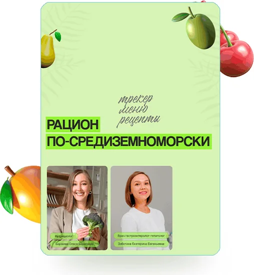
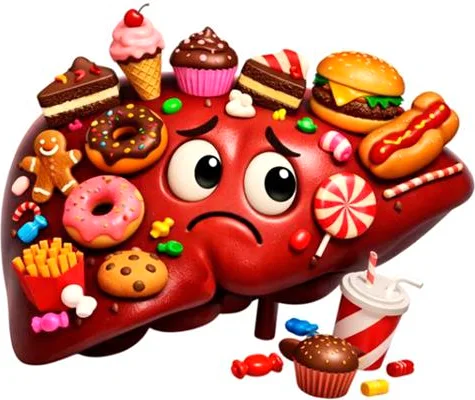
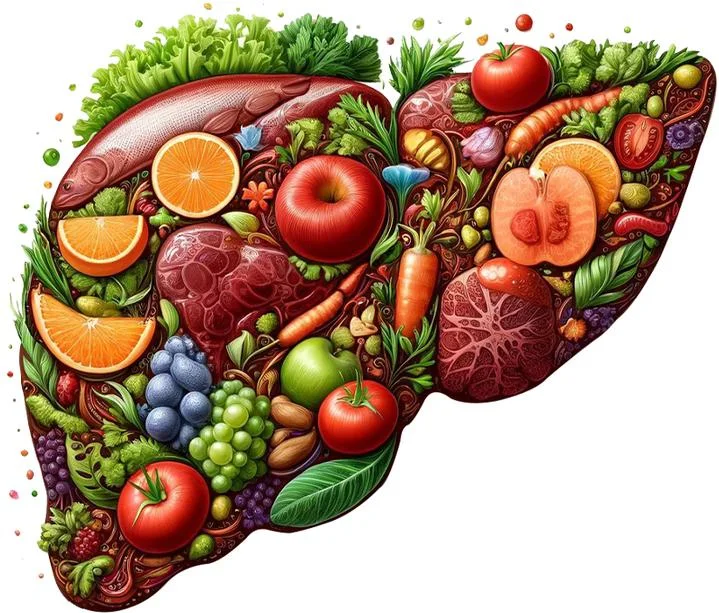
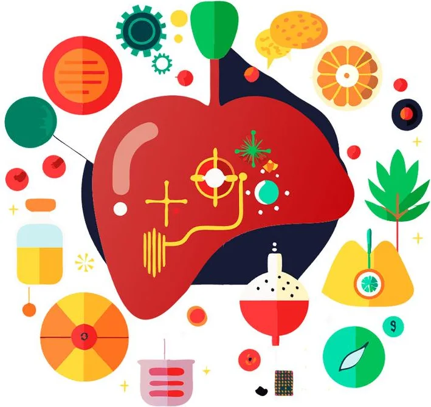
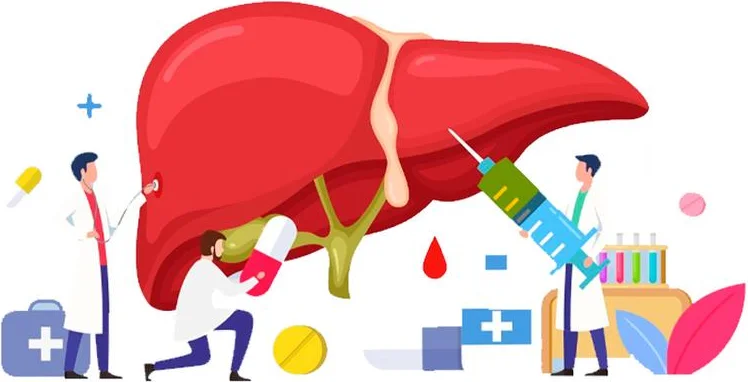
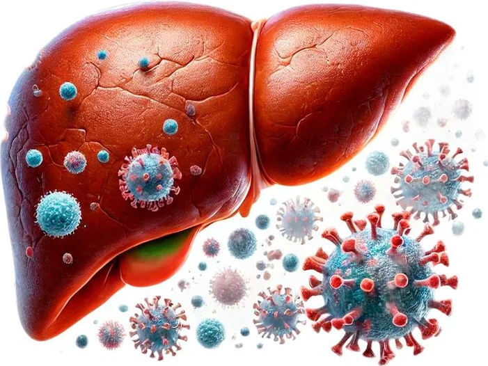
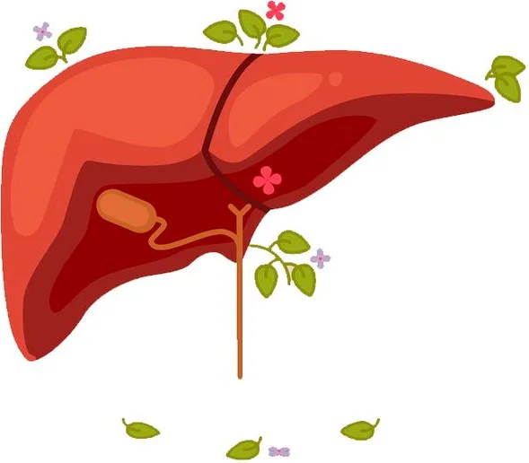

от гепатолога и нутрициолога
«Рацион по-средиземноморски»
Адаптация Средиземноморской диеты для пациентов с НАЖБП и заболеваниями пищеварительной системы с целью снижения веса
Узнать подробнее@dr.zabotina
Врач гепатолог, гастроэнтеролог, вирусолог, кандидат медицинских наук
Записаться на консультацию>20лет
я занимаюсь лечением заболеваний печени и пищеварительной системы
01
Закончила ИГМА в 2003 г., специальность «лечебное дело», интернатура по терапии;
Профессиональная переподготовка и усовершенствование в Сеченовском Университете, НИИ Вирусологии им. Ивановского, Центре изучения печени РУДН, Казанском Медицинском Университете. Специальности — гастроэнтеролог-гепатолог, вирусолог;
Защита кандидатской диссертации в ЦНИИ Эпидемиологии на тему вирусных гепатитов;
15 лет работы в ПЦР-лаборатории диагностики гепатитов В и С;
13 лет работы в гепатологическом центре (амбулаторное и стационарное лечение пациентов с вирусными гепатитами, циррозом печени и всеми заболеваниями ЖКТ);
В течение 4 лет в качестве главного областного гепатолога руководила региональной программой по противовирусной терапии гепатитов, пролечила около 200 больных;
В настоящее время — прием пациентов со всеми заболеваниями ЖКТ в частной клинике.
В 2020 г. прошла повышение квалификации: «Лекарственное поражение органов пищеварения», «Современная тактика лечения циррозов печени», «Аутоиммунные заболевания ЖКТ» в Центре гастроэнтерологии СПбГУ.
02
Диагностировать и назначить лечение заболевания печени и органов ЖКТ;
Провести противовирусную терапию вирусного гепатита;
Рассказать, как защитить от заражения вирусным гепатитом Ваших близких;
Объяснить результаты лабораторно-инструментального обследования;
Рассказать о питании при заболеваниях пищеварительной системы;
Я консультирую только пациентов 18+
03

от гепатолога и нутрициолога
Адаптация Средиземноморской диеты для пациентов с НАЖБП и заболеваниями пищеварительной системы с целью снижения веса
Узнать подробнее04

Бесплатно

Курс
Для пациентов и врачей

Бесплатно

Курс
для врачей и пациентов. Как не допустить развитие цирроза и рака?

Бесплатно
Симптомы и лечение

Курс
Для пациентов и врачей
05
Если вы находитесь далеко и не имеете возможности приехать на прием, вы можете обратиться ко мне ОНЛАЙН.
Обследование, тактика лечения, образ жизни и питание для пациентов от 18 лет в следующих клинических ситуациях:
Я не веду он-лайн приём по поводу болевого синдрома, диареи, вздутия живота, лихорадки, кровотечений и других ситуаций, которые требуют обязательного осмотра
то приглашаю Вас на он-лайн приём в Клинику Фомина. Беседа по видеосвязи в течение 1 часа.
| первичной | 10 500 руб. |
|---|---|
| повторной | 9 000 руб. |
| первичной | 4 000 руб. |
|---|---|
| повторной | 3 000 руб. |
Онлайн консультация не является медицинской услугой
06
Общий анализ крови
Биохимия крови
Анализ крови на гепатиты В и С
УЗИ органов брюшной полости
07
Спасибо огромное за Ваш грамотный и развернутый ответ!!! Спасибо, что есть такой специалист и человек, который помогает!!!
Обращаюсь не первый раз! Очень доволен консультацией. Как всегда — всё понятно и доступно. Большое спасибо Екатерине Евгеньевне за профессиональный подход и отношение!
Спасибо за проделанную колоссальную работу)) очень классный, полезный курс, зачитываюсь!
Спасибо, Екатерина Евгеньевна!!! Курс «Гепатит С» — это просто находка для начинающего врача, всё разложено по полочкам, без воды. Очень ценные клинические примеры! И отдельное спасибо за чёткие схемы, всё скачала)
Екатерина Евгеньевна, огромное спасибо Вам за курс «Гепатит С», очень много полезной информации, вы очень доступно всё объяснили, мне как пациенту теперь понятно, что делать!
Замечательный Доктор, профессионал своего дела. Чуткое отношение к пациенту!
Здравствуйте! Не могу удержаться, чтобы не сказать спасибо за лекцию! Я ещё в процессе, но с таким удовольствием разбираю и вникаю в каждый слайд, настолько доступно и понятно, и главное, интересно!
Хотя раньше думала, что гепатиты это дремучий лес и мне не под силу их понять, ошибалась.
Я ординатор гастроэнтеролог 2 года)
Очень жду, что будут ещё лекции по гепатологии!🌸
Екатерина Евгеньевна, здравствуйте! Позвольте ещё раз поблагодарить за вашу лекцию по гепатиту В. Лекция, конечно, просто блестящая. Очень объемная, подробная, и в то же время — понятная, доступная восприятию врача не-инфекциониста или пациента. И в конце концов — просто не скучная😄👍
Только сегодня досмотрел. В последний день 🤣
Смотрел кусками, периодически возвращаясь к пройденному — тут великолепно отрабатывает рабочая тетрадь, где ёмко и в сжатой форме есть всё, что надо помнить.
08